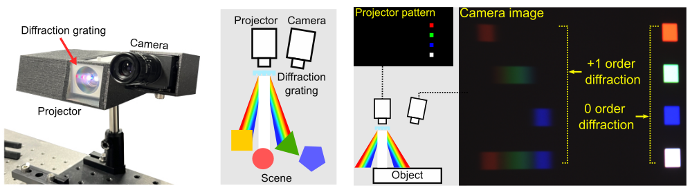

White Scanline Pattern
The scene is illuminated by white scanline patterns under two different exposure time and pattern insensity. We create a high dynamic range image to earn valid intensity values for both zero and first-orders.
Hyperspectral 3D imaging aims to acquire both depth and spectral information of a scene. However, existing methods are either prohibitively expensive and bulky or compromise on spectral and depth accuracy. In this paper, we present Dispersed Structured Light (DSL), a cost-effective and compact method for accurate hyperspectral 3D imaging. DSL modifies a traditional projector-camera system by placing a sub-millimeter thick diffraction grating film front of the projector. This configuration enables dispersing structured light based on light wavelength. To utilize the dispersed structured light, we devise a model for dispersive projection image formation and a per-pixel hyperspectral 3D reconstruction method. We validate DSL by instantiating a compact experimental prototype. DSL achieves spectral accuracy of 18.8nm full-width half-maximum (FWHM) and depth error of 1mm, outperforming prior work on practical hyperspectral 3D imaging. DSL promises accurate and practical hyperspectral 3D imaging for diverse application domains, including computer vision and graphics, cultural heritage, geology, and biology.
We devise the proposed DSL imaging system with the goals of compactness and affordability. We combine a conventional trichromatic camera with a trichromatic projector and a diffraction-grating film mounted in front. This configuration makes light from the projector undergo dispersion, and, as such, patterns emitted from the projector are spatially dispersed depending on wavelength.
Our prototype consists of an RGB projector equipped with a diffraction grating film, and an RGB camera as shown in the left and middle image. Right image shows an example projector pattern and its corresponding captured image, exhibiting clear first-order diffraction.
$\textbf{Hyperspectral Imaging.}$ We model the dispersed structured light using pre-calibrated correspondence model $\phi(p,z,m,\lambda)$. Correspondence model enables to find the corresponding projector pixel $q_{m,\lambda}$ for any visible wavelength $\lambda$, order $m$, camera pixel $p$ and depth $z$. We earn a RGB pixel intensity graph. Utilizing this, we exploit the first-order diffractions for accurate hyperspectral reconstruction and formulate a per-pixel optimization problem utilizing the given correspondence function.
$q_{m,\lambda} = \phi(p,z,m,\lambda)$
$\textbf{Depth Imaging.}$ We use binary-code structured light patterns for depth estimation. We validate the decoding process for DSL by comparing the minimum captured intensity $I^{on}_{min}$ and the maximum captured intensity $I^{off}_{max}$.
The scene is illuminated by white scanline patterns under two different exposure time and pattern insensity. We create a high dynamic range image to earn valid intensity values for both zero and first-orders.
We illuminate dispersed binary-code structured light for depth estimation and can earn precise depth values using DSL decoding method.
We show reconstructed hyperspectral 3d results for real scene. We validate our reconstructed hyperspectral relfectance with spectroradiometer measurements.
@inproceedings{NOt Yet}